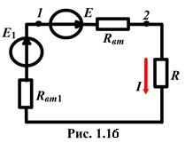
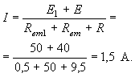
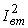
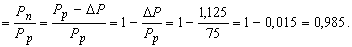

Преобразовать ИТ J в ИН; найти ток I в цепи (рис. 1.15 ) с параметрами: E1 = 50 B, Rвт1 = 0,5 Ом; J = 0,8 A, R = 9,5 Ом; Gвт = 0,02 Cм и КПД источника напряжения Е1.
Решение
1. Внутреннее сопротивление Rвт и ЭДС E эквивалентного ИН: Rвт = 1/Gвт = 1/0,02 = 50 Ом; E = RвтJ = 50 Ч 0,8 = 40 B. 2. Для схемы замещения цепи (рис. 1.16) ток 
3. Мощность, развиваемая источником напряжения Е1, определяется по соотношению:
Рp= E1I = 50Ч1,5 = 75 Вт.
(1.26)
Примечание 1. Для источника тока E = J/Gвт. 4. Мощность тепловых потерь в ИН Е1DP = Rвт1I2 = 0,5Ч1,52 = 1,125 Вт. Примечание 2. В источнике тока мощность потерь DP =  / Gвт. 5. Тогда отдаваемая (полезная) мощность в цепь источником Е1 Рп = Рp - DP = 75 - 1,125 = 73,875 Вт. 6. Коэффициент полезного действия (КПД) источника Е1
h
(1.27)
Замечание. В идеальных источниках энергии (ИН и ИТ) КПД h = 1, в реальных - КПД h < 1.